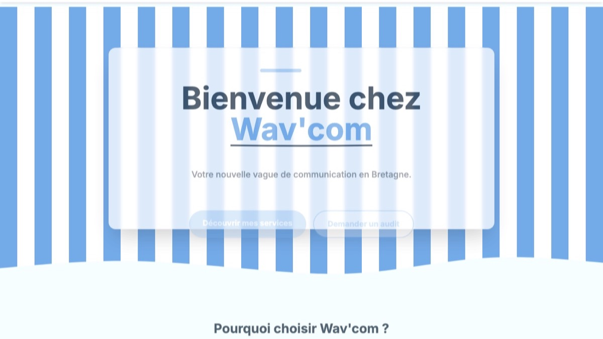
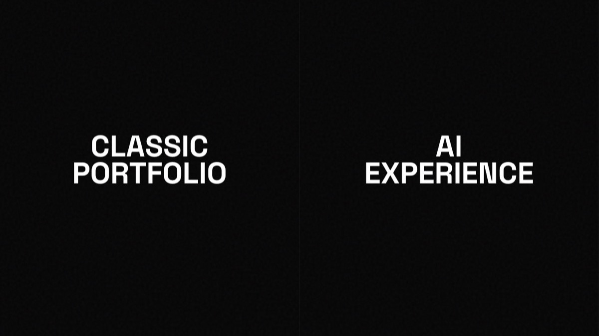
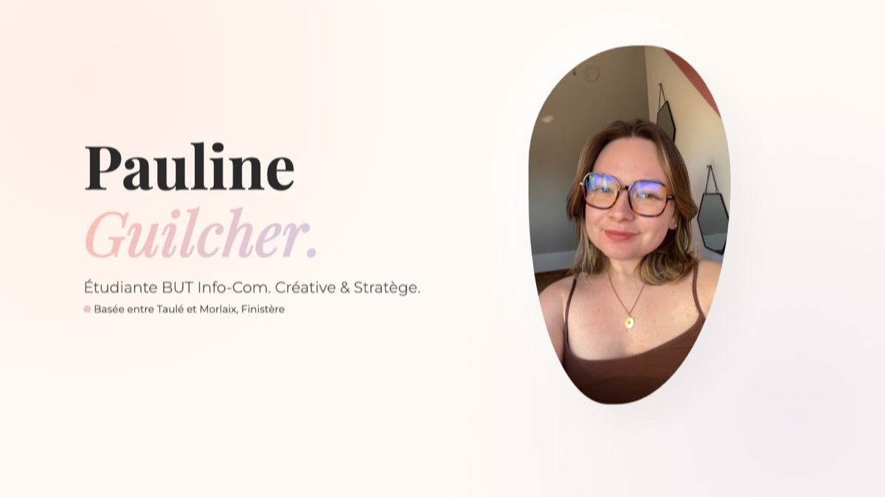

Des projets concrets, déjà en ligne
Quelques sites que j'ai conçus et développés récemment, du site vitrine au portfolio interactif. Chaque lien pointe vers le site réel, en ligne.

Wav'com
Site vitrine pour une agence de communication et de community management en Bretagne : présentation des services, tarifs et prise de contact, avec une identité visuelle « vague » sur-mesure.

Portfolio personnel — interface classique & IA
Mon portfolio développeur, avec deux expériences au choix : une présentation classique de mes projets, et une interface pilotée par un chatbot IA pour explorer mon travail autrement.

Portfolio de Pauline Guilcher
Portfolio réalisé pour une étudiante en BUT Info-Com : présentation de son parcours, de ses projets (gestion de crise, événementiel, radio) et de ses expériences professionnelles.
Des projets techniques, disponibles sur GitHub
En dehors des sites livrés à mes clients, j'aime expérimenter : scraping et automatisation, algorithmique, applications de recommandation... Tout mon code est visible publiquement.
Votre projet pourrait être le prochain
Envie d'un site qui vous ressemble ? Discutons-en, sans engagement.